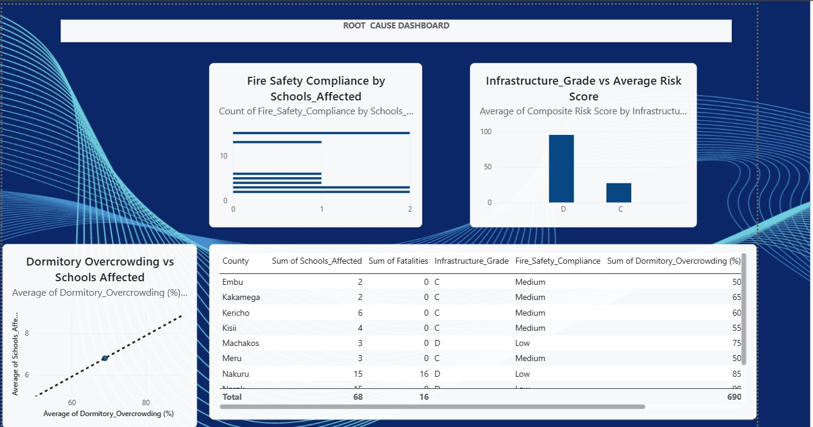
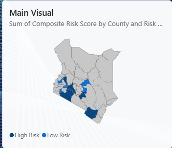
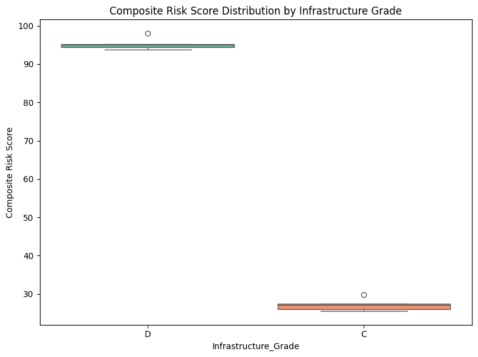
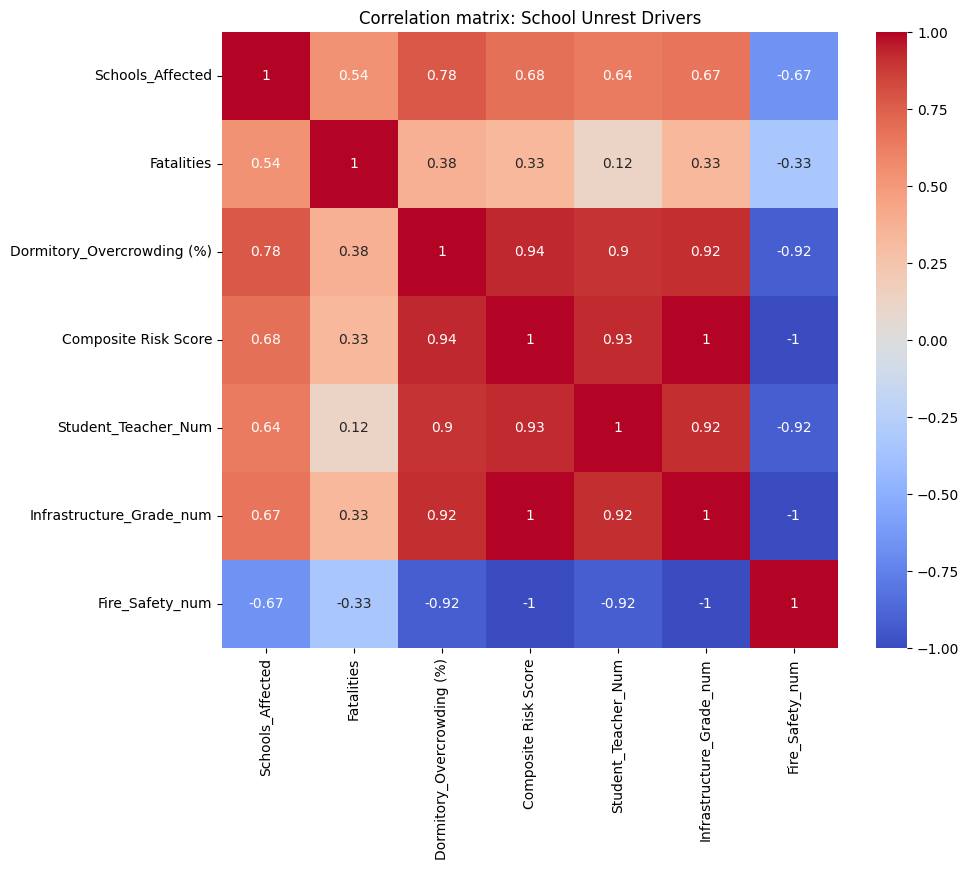
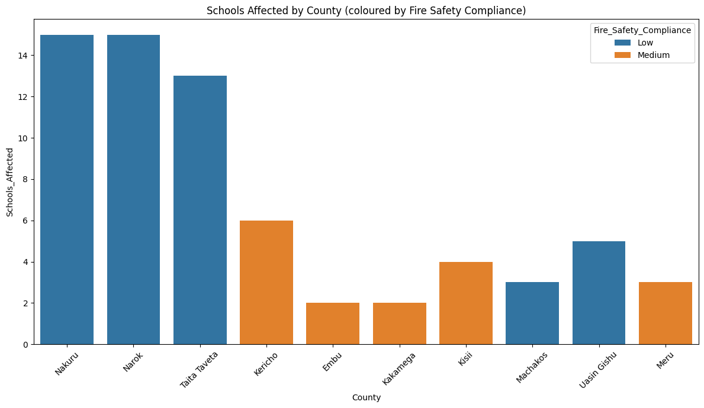
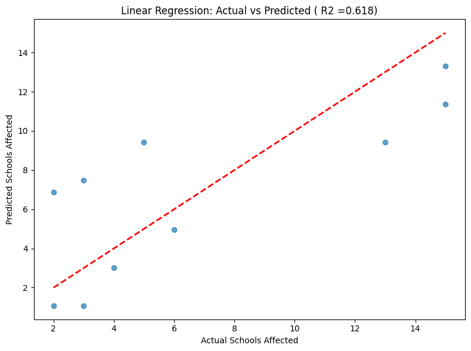
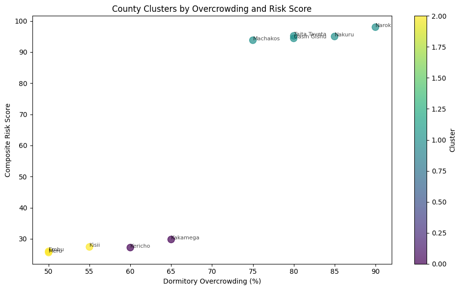

Executive Overview
This project combines two related analyses within Kenya's education system: CBC Transition Readiness Analysis and School Unrest and Safety Risk Analysis. The goal is to evaluate how education policy readiness influences real-world school safety outcomes, including infrastructure risk, overcrowding, and school unrest — connecting policy implementation, institutional readiness, and safety outcomes into a unified education risk framework.
Problem Statement
Recent years have seen a rise in school unrest incidents across Kenya, raising concerns about student safety and school infrastructure, alongside uneven readiness for the Competency-Based Curriculum. This project identifies patterns and key risk factors contributing to these incidents and translates them into actionable insights for intervention.
Project Objectives
Methodology
Both analyses use a unified analytical pipeline combining spreadsheet preparation, dashboarding and statistical modelling.
Data Cleaning & Preprocessing
Data cleaning and descriptive statistics performed in Google Sheets.
Exploratory Analysis
Exploratory analysis and descriptive statistics to identify unrest and readiness patterns.
Dashboard Visualization
Power BI dashboards mapping school unrest incidents, root causes and geographic risk distribution.
Statistical Modelling
Python-based correlation analysis, regression modelling and clustering of counties, supported by a Composite Risk Score (0–100) built from infrastructure quality, fire safety compliance and dormitory overcrowding.
Technology Stack
Dashboard Preview
Interactive Power BI dashboards mapping school unrest incidents, root causes and county-level risk across Kenya.


Python Analysis Highlights
Statistical analysis and modelling outputs from the Python (Google Colab) notebooks behind the risk scoring.





Key Findings
High-Risk Counties
Across the 10 counties tracked, unrest affected 68 schools and caused 16 fatalities — all in Nakuru. Narok (composite risk score 98/100), Nakuru (95) and Taita Taveta (95.2) form a distinct high-risk tier well above the rest.
Infrastructure & Safety
Risk splits cleanly along infrastructure grade: the 5 counties graded "D" with "Low" fire safety compliance average a composite risk score of 95.3, versus 27.2 for the 5 counties graded "C" with "Medium" compliance — a complete overlap between weak infrastructure and high risk.
Overcrowding
Dormitory overcrowding ranges from 50% to 90% (average 69%) and correlates strongly with composite risk (r = 0.94) — making it the single strongest driver of unrest risk in the dataset.
CBC Readiness Link
Schools with low CBC readiness often exhibit higher safety risks, and infrastructure quality is a shared driver across both readiness and unrest — the same "Grade D" counties turn up in both the CBC readiness gaps and the school unrest risk tier.
Concentration of Risk
Risk is evenly split at the county level — 5 of 10 counties fall in the "High Risk" category and 5 in "Low Risk" — but the divide is stark: high-risk counties average 95.3 on the composite score versus 27.2 for low-risk counties, with almost no middle ground.
Project Outcomes
Strategic Recommendations
1. Urgent Fire Safety Audits
Conduct urgent fire safety audits in high-risk schools.
2. Reduce Overcrowding
Reduce dormitory overcrowding to safe capacity levels, addressing it as a dual risk factor for both safety and CBC implementation.
3. Improve Infrastructure
Invest in infrastructure improvements in low-readiness, high-risk schools.
4. Integrate Monitoring Systems
Integrate CBC readiness and safety monitoring into one national system, and implement a national monitoring system for school safety trends.
5. Prioritize Overlapping High-Risk Counties
Prioritize interventions in counties that overlap across both readiness gaps and safety risks, and strengthen education policy implementation tracking.
Project Conclusion
The analysis shows that CBC readiness and school safety are not separate challenges but interconnected issues within Kenya's education system. Addressing both together provides a more effective framework for improving education outcomes and student safety.
Project Resources
This case study demonstrates the application of Power BI, Python and Google Sheets to connect CBC transition readiness with school safety risk, supporting evidence-based education policy decisions.